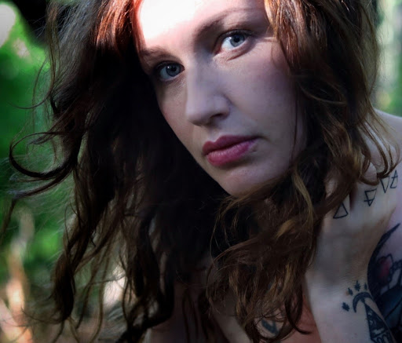
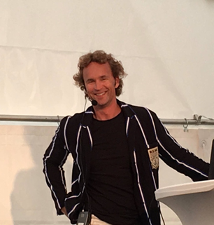

Elin Bååth
Embracing the cycles of nature
Elin Bååth is an activist, ecofeminist, teacher, artist - and a witch. She has a master degree in religion and teaches literature, writing and speech to adults. She represented the Feminist Initiative party in the City Council of Gotland for four years and now runs a podcast on witchcraft, feminism, society and change, called Förmödrars makt
More info:
linktr.ee/EldinEarthWitch
In this Tedx talk Elin speaks about why we need to bring back the ancient knowledge of a circular world - of the changing seasons of the earth, moon and our own bodies. Not only for the sake of our own health, but for the health of the earth and a sustainable society.
Niclas Rodhborn
About
Eurosport commentator, 2013 national tennis team captain and World Record for number of games played holder, Niclas Rodhborn had faced a critical accident before all his success. Taking through his emotional journey, Niclas will talk about how he brought himself out of tragedy.

Alec Arho-Havrén
About
Alec Arho-Havrén has many ventures up his sleeve - founder of the World Ecological Forum, smart self-charging road project developer, Gotland’s racetrack founder, a frequent speaker on transport electrification, innovation and green leadership. His talk will focus on the energy paradigm shift and the challenges of technological singularity.